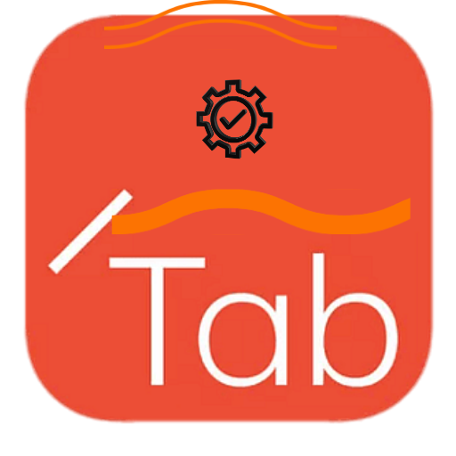

TabQuest Evolution
Solving browser chaos through professional-grade temporal logic.
⚠️ The "Tab Fatigue" Problem
Modern professionals suffer from Context Switching. Having dozens of tabs open leads to memory leaks in both your browser and your brain, dropping productivity by nearly 40%.
🛠️ The TabQuest Solution
I engineered TabQuest to create a Temporal Workspace. Instead of clutter, your tabs are serialized into a mission-critical backup, allowing for instant Deep Work isolation.
Download TabQuest v1.0
Get the production-ready build. Secure, lightweight, and built with Manifest V3.
🚀 Download ZIP for Chrome
To Install: Unzip file ➔ Go to chrome://extensions ➔ Enable "Developer mode" ➔ Click "Load unpacked" ➔ Select folder.
Name Mission
Give your current tab group a name to save the context.
Set Duration
Define your focus time in hours and minutes.
Launch
Tabs close instantly, and the background timer starts.
Resume
Click the notification alert to bring all tabs back.
Temporal Control
Set customizable focus timers and automatically manage your work sessions with precision.
Smart Serialization
Your tabs are instantly backed up in a mission-critical state for perfect recovery.
Instant Recovery
Restore all tabs with a single click when your focus session ends.
Deep Work Mode
Eliminate distractions by isolating your active workspace completely.
Session History
Track and manage multiple missions with unique names and timelines.
Smart Notifications
Receive timely alerts when your focus session is complete and ready to resume.
Built With Modern Web Technologies
TabQuest leverages cutting-edge browser APIs and performance-optimized JavaScript for a seamless experience.